Show Tell Share is a family gathering program for children who live at home (generally ages 2 to 18) that builds lasting healthy eating habits through ownership, peer connection, and hands-on food exploration.
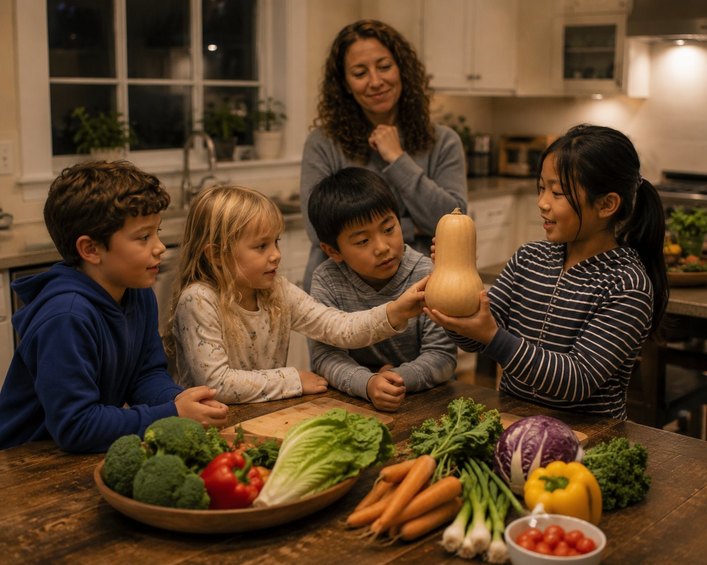
Developing habits that stick
Knowing what's healthy isn't enough. Children eat what they're used to, what their peers eat, and what they helped make. The gap isn't knowledge, it's habit.
Show Tell Share builds that habit through a repeatable system that moves children from "I won't touch that" to "Can I help make it?"
Built around how children actually learn
Habits form through watching, doing, and owning. Not lectures or reward charts. Every part of the gathering is built around that.
🥕
Show & Tell ownership
Each child brings a food item to share. Research on self-determination shows children explore foods more willingly when the choice was theirs to begin with.
👐
Hands-on exploration
Sensory exposure through touching, smelling, and assembling food builds familiarity and acceptance over time, even before a child takes a single bite.
👪
Eating together
Children eat with their peers. Social learning research shows observing others eat a food is one of the most consistent predictors of a child trying the food themselves.
🔁
A repeatable system
The same structure repeats at every gathering. Habit is not formed from a one-off event, but rather by showing up consistently and repeating the same routine over time.
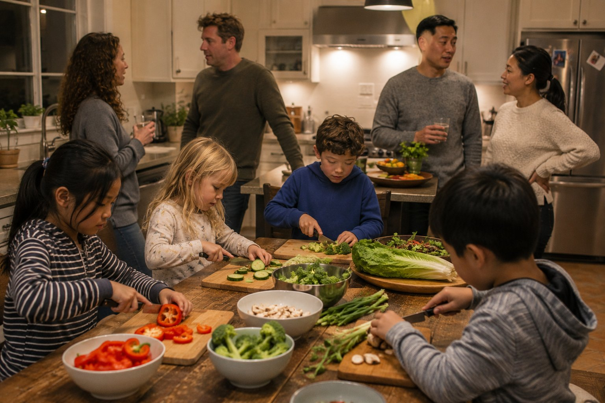
A developmental progression built in
Every session is adapted to where a child's capabilities actually are, not just what age they're at. As they grow, their role in the gathering deepens and their autonomy increases.
Full meal planning, independent cooking, connecting food to identity.
Minimal guidance
Note for parents: Age is a guide, not a rule. Some younger children are ready for more, and some older ones benefit from stepping back. Use the skill selector on the How It Works page to find the right fit for your child.
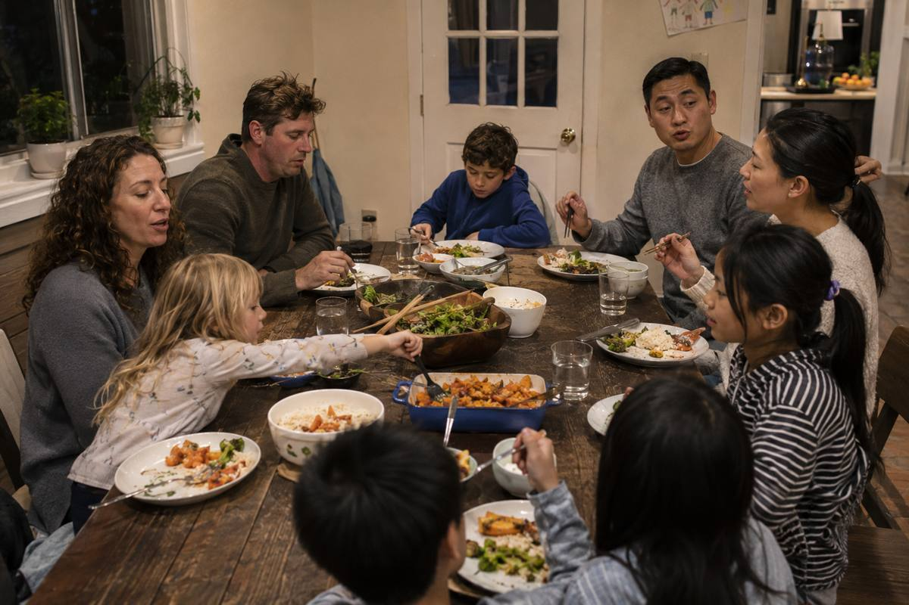
If you've searched any of these, this is for you
picky eaters
vegetables for kids
family meal planning
fuss-free dinner recipes
teaching kids to cook
healthy eating habits children
getting kids to try new foods
building food culture at home
These searches all point to the same underlying frustration: parents who want a long-term fix, not another one-time tip. Show Tell Share is built to be that system.
How a Show Tell Share gathering works
Every gathering follows the same core structure by design. The predictability helps children feel secure, and when children know what to expect, they'll feel safe enough to transition from being a passive observer to an active participant. The exploration and sharing routines reinforce habits that carry into everyday life.
Before the gathering: pick your item and flag your format
Each child picks a food item to bring: a vegetable, fruit, or simple dish
Younger children choose with a parent; older children choose independently
Each family flags their format when confirming:
Needs-prep: raw ingredient brought to prepare at the gathering
Ready-to-eat: dish cooked at home. Bring the key raw ingredient alongside so the child has something whole to present
Arrive and set up
Host sets up before anyone arrives
Set up one prep table per skill phase represented, not one per family
Each table needs: cutting board, age-appropriate knife, scrap bowl, paper towels
Phase 1 children can work at a low coffee table or bar stool height
Ready-to-eat families: place dish on the dining table, keep raw ingredient out for Show & Tell
Needs-prep families: go to the prep table for their phase
Once everyone is settled, gather the children and announce this week's focus
Show & Tell
Gather all children in a circle
Each child presents their item:
Needs-prep: show the raw ingredient whole
Ready-to-eat: show the raw ingredient alongside the finished dish
Pass the item around. Touch it, smell it.
Keep it conversational: "What is it? Where does it come from? Has anyone tried it before?"
After presenting: ready-to-eat dishes go to the dining table, needs-prep items go to the prep table
Prepare together
Direct each child to the prep table for their phase after Show & Tell
Phase tasks by level:
Phase 1 (ages 2–4): wash produce, tear vegetables by hand, arrange items on a plate
Phase 2 (ages 4–7): peel soft vegetables, spread with a butter knife, juice citrus, mix salads
Phase 3 (ages 7–12): chop with a table knife, follow a simple recipe, boil water with supervision
Phase 4 (ages 12–18): lead a full dish or station, adjust seasoning, manage their area independently
Ready-to-eat items are already on the dining table, their raw ingredient was presented in Show & Tell and does not need prep. Hot dishes and soups go directly on the dining table. Do not hand these to young children.
Where phases mix at the same station, the older child leads and the younger child assists
Adults stay nearby but do not take over. Correct only for safety, not for messiness or imperfect results.
If a child finishes early, they can help arrange the dining table or assist at another phase's station
Eat and reflect together
Everyone eats at the same table, children and adults together
No coaxing, no "just one bite"
Adults try things first and describe what they notice
Keep it warm and social
End with one question around the table: "What was something you noticed today?"
Toddlers can point. Older children give a sentence. No wrong answers.
How children are grouped
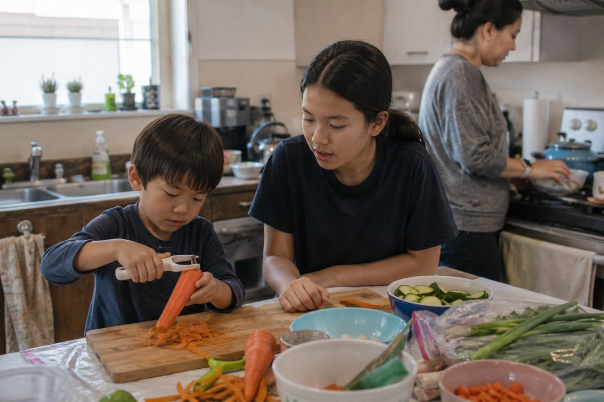
Children are placed at prep tables by skill phase, not by age or family. Select the situation that applies to your family.
I have 1 child
Multiple, similar ages
Multiple, different ages
Use the skill-based level finder on the Resources page to find your child's phase before the first session. Your child will work at the prep table for their phase alongside children from other families at the same level.
Phase determines the prep table. Use the skill finder again when your child's skills grow.
Run the skill finder for each child separately. Children close in age often land in the same phase, but not always.
Same phase
They work at the same table and can be paired on a task together. This works well, peer collaboration at the same level is productive and enjoyable.
Different phases
Separate them so each child works at the right table. Don't assume they should work together just because they're close in age.
A child who is slightly more capable than a sibling learns more from teaching than from doing it themselves. The higher-phase child benefits from being given a lead role, not a shared task.
Each child goes to the prep table for their own phase. This is the intended model. The gathering brings all children back together at Show & Tell and at the table, the separation is only during prep.
Example: ages 4 and 10
The 4-year-old washes and peels at Phase 2. The 10-year-old chops and follows a recipe at Phase 3. They present at Show & Tell together and eat at the same table.
Example: ages 3, 7, and 14
The 3-year-old tears and arranges at Phase 1. The 7-year-old peels and mixes at Phase 2. The 14-year-old leads a dish at Phase 4 and can take the host role.
Age is a guide, not a rule. A 5-year-old who cooks regularly may be Phase 3. A 12-year-old new to the kitchen may be Phase 2. Always use the skill finder rather than defaulting to age.
Session guides
All three gatherings follow the same 5-step structure. What changes each week is the focus, a light theme that shapes what children are thinking about without changing how the gathering runs. Each guide below includes the full step-by-step breakdown and facilitator prompts for each phase.
Week 1: Try something new
Week 2: Make something
Week 3: Plan the next round
Week 1: Try something new
Comfort and curiosity over achievement
The focus this week is simply trying a food no one in the group has brought before. There are no wrong choices. The goal is to get children comfortable with the structure of the gathering and curious about what others brought.
1 · Arrive and set up
Host sets up one prep table per skill phase before families arrive
Each table: cutting board, phase-appropriate knife, scrap bowl, paper towels
Phase 1 children work at a low surface or coffee table height
Ready-to-eat families: place dish on dining table, keep raw ingredient out for Show & Tell
Needs-prep families: go to their phase's prep table
Gather children once everyone is settled and announce this week's focus
2 · Show & Tell
Gather all children in a circle
Needs-prep: child shows the raw ingredient whole
Ready-to-eat: child shows the raw ingredient alongside the finished dish
Pass each item around. Touch it, smell it.
Ask: "What is it? Where does it come from? Has anyone had this before?"
After presenting: needs-prep items go to prep table, ready-to-eat items to dining table
3 · Prepare together
Children move to their phase's prep table
Phase 1 (ages 2–4): wash produce, tear vegetables, arrange items on a plate
Phase 3 (ages 7–12): chop with a table knife, follow a simple recipe, boil with supervision
Phase 4 (ages 12–18): lead a dish or station independently
Ready-to-eat items are already on the dining table. No prep needed.
Adults step back. Correct for safety only, not messiness or imperfect results
4 · Eat together
Everyone eats at the same dining table, children and adults together
No coaxing, no "just one bite"
Adults try things first and describe what they notice
Keep conversation warm and social
5 · Reflect
Ask: "What was something you noticed today?"
Go around the table. Every child answers.
Toddlers point. Older children give a sentence. No wrong answers.
Facilitator prompts by age group
Phase 1 · Ages 2 to 4
"What color is that?"
"Can you smell it?"
"Is it bumpy or smooth?"
"Can you touch it with one finger?"
Phase 2 · Ages 4 to 7
"Why did you pick this food?"
"Which one smells the strongest?"
"Can you find two foods the same color?"
"What does it remind you of?"
Phase 3 · Ages 7 to 12
"Where do you think this grows?"
"How would you describe this to someone who's never seen it?"
"What do you think it tastes like before you try it?"
Phase 4 · Ages 12 to 18
"If you were making a dish with this, what would you pair it with?"
"Why do you think we don't eat this more often?"
"What did you have to do to find this food?"
Week 2: Make something
Focus on a skill, not just a task
This week each child picks a kitchen skill they haven't tried before and works on it during prep. It doesn't have to be impressive, using a peeler for the first time counts. The point is that children leave having learned something specific they can name.
1 · Arrive and set up
Set up one prep table per skill phase represented, not one per family
Each table gets cutting boards, age-appropriate knives, a scrap bowl, and paper towels
Make sure any tools specific to this week's skills are at the right table (peelers at Phase 2, chef's knives at Phase 4)
Small children (Phase 1) at a low surface or coffee table
Ready-to-eat families: dish on dining table, raw ingredient out for Show & Tell
Needs-prep families: go to their phase's prep table
As families arrive, ask each child: "What's one thing you're going to try making today?"
2 · Show & Tell
Gather all children together in a circle
Each child presents their item whole, needs-prep children show the raw ingredient, ready-to-eat children show raw ingredient alongside finished dish
Pass each item around: touch it, smell it
After presenting the item, ask each child: "What skill are you planning to work on today?"
After presenting: needs-prep items go to the prep table, ready-to-eat items stay on the dining table
3 · Prepare together
Children work at the prep table for their phase
Phase 1 (ages 2–4): try tearing or washing. Name what they're doing as they go.
Phase 2 (ages 4–7): use a peeler or squeeze citrus for the first time
Phase 3 (ages 7–12): work on knife technique or make a dressing from scratch
Phase 4 (ages 12–18): reduce a sauce, make an emulsion, or lead a full dish independently
Adults demonstrate once, then step back completely
4 · Eat together
Everyone sits at the same dining table, children and adults together
Acknowledge what each child made: "You made that dressing. How does it taste?"
No coaxing, no pressure. Adults try things first.
5 · Reflect
Ask: "What's one thing you made today that you want to try again at home?"
Go around the table. Every child answers.
Toddlers can point or show. Older children give a sentence.
Facilitator prompts by age group
Phase 1 · Ages 2 to 4
"Can you tear this into small pieces?"
"Can you stir this for me?"
"You made that! How does it feel?"
Phase 2 · Ages 4 to 7
"What job did you have in the kitchen?"
"Did it look different after you made it?"
"Would you want to do a bigger job next time?"
Phase 3 · Ages 7 to 12
"Did anything go differently than you expected?"
"What would you do differently next time?"
"What did you have to figure out on your own?"
Phase 4 · Ages 12 to 18
"Did you follow a recipe or improvise?"
"What would make this better?"
"Could you teach someone else how to make this?"
Week 3: Plan the next round
Children decide what comes next
This week runs the same as the others, with one addition at the end: children decide the menu for the next round. Older children can propose a full plan. Younger children pick one food they want the group to try. This hands ownership of the program to the children themselves.
1 · Arrive and set up
Same setup as previous weeks: one prep table per phase present
If an older child is taking the host role: brief them before families arrive on how to open and run Show & Tell
Introduce the teen host to arriving families as the host, not a helper
Ready-to-eat families: dish on dining table, raw ingredient out for Show & Tell
Needs-prep families: go to their phase's prep table
2 · Show & Tell
Gather all children in a circle
Needs-prep: child shows the raw ingredient whole
Ready-to-eat: child shows raw ingredient alongside finished dish
Pass each item around. Touch it, smell it.
Ask: "What is it? Has anyone had this before? What does it remind you of?"
After presenting: needs-prep items go to prep table, ready-to-eat items to dining table
3 · Prepare together
Children move to their phase's prep table
Phase 1 (ages 2–4): wash, tear, arrange
Phase 2 (ages 4–7): peel, spread, mix, juice citrus
Phase 3 (ages 7–12): chop, follow a recipe, boil with supervision
Phase 4 (ages 12–18): lead a dish or station entirely. Adults step back completely.
Older children can take full ownership of running their phase's table this week
4 · Eat together
Everyone eats at the same dining table, children and adults together
Celebrate the cycle: acknowledge what everyone has tried and made across all three sessions
No coaxing, no pressure. Adults model curiosity.
5 · Reflect and plan the next round
Ask: "What do you want to cook or try next time?"
Go around the table. Every child answers.
Younger children name one food they want to try
Older children can propose a full menu or focus for the next round
Confirm the next round's plan before families leave
For adolescents in this session: Teens are encouraged to take the host role. Introduce them as the host, not as a helper. Let them run the Show & Tell and open the reflection. Even if it's imperfect, their ownership of the moment matters more than a smooth session.
Facilitator prompts by age group
Phase 1 · Ages 2 to 4
"What was your favorite food we tried?"
"What food would you pick for next time?"
"Can you help put the food on the table?"
Phase 2 · Ages 4 to 7
"What was the most surprising thing you tasted?"
"Did you try anything new that you liked?"
"What should we make next time?"
Phase 3 · Ages 7 to 12
"Is there something you want to cook at home now?"
"What would you do differently next round?"
"What food do you want to learn how to make?"
Phase 4 · Ages 12 to 18
"Has anything changed about how you think about food?"
"What theme should we do next round?"
"Would you want to plan the next menu yourself?"
How to run your first gathering
You don't need to be an experienced cook or have a big kitchen. Here's everything you need to get the first session off the ground.
Step 1: Invite 2 to 4 families
Start small. Two or three families is enough for the peer effect to work and keeps the logistics manageable. Reach out with something like this:
"Hey, we're starting a monthly food gathering for the kids. Each family brings one ingredient or dish, the kids show and tell what they brought, and then we prep and eat together. First one is at our place. Can you come? Just bring something your kid chose: a vegetable, a fruit, anything they picked themselves."
Step 2: Agree on a starter menu
Before the first session, suggest a simple menu that every family can contribute to. When confirming, each family flags their item as needs-prep (raw, prepared at the gathering) or ready-to-eat (cooked at home, bring the raw ingredient alongside for Show & Tell). A few menus that work well:
🍗 Chicken and cucumber salad
One family brings a rotisserie chicken to shred together. Another brings cucumbers to slice. A third makes a simple sesame oil and rice vinegar dressing. Easy for every age, cucumbers cut well even with a children's knife.
🍚 Rice bowl with toppings
One family brings cooked rice (ready-to-eat). Others bring toppings to prep on the spot: sliced avocado, shredded carrots, edamame, cucumber. Each child assembles their own bowl.
🧆 Flatbread with toppings
One family brings flatbreads (ready-to-eat). Others bring toppings: hummus, sliced tomatoes, cucumber, herbs. Children spread and assemble their own. No cooking needed, great for a first session.
🍌 Banana and yogurt bowls
Children slice bananas, spoon yogurt, and add toppings like granola, honey, or fresh berries. Even a two-year-old can do this with a butter knife. Great as a snack gathering for first-timers.
🥚 Egg fried rice
One family brings cooked rice (ready-to-eat). Children crack eggs, tear scallions, and stir-fry with minimal adult help. Phase 3 and 4 children take turns at the wok. A staple for groups with older kids.
🥗 Spring roll station
Rice paper rolls with shrimp, noodles, cucumber, and herbs. Children assemble their own. No knives needed for younger children; everything tears by hand. Works across all four phases at the same table.
A few ingredient notes: Cucumbers are easy to cut, great for younger children. Carrots are hard and can be frustrating. Onions make everyone cry. Skip them for the first session. If someone insists on onions, tell them to bring swim goggles. It sounds silly and it works, and the kids love it.
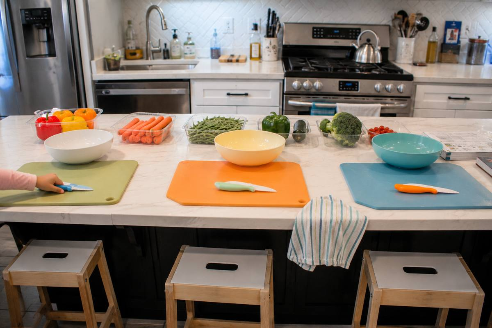
Step 3: Set up before families arrive
Set up one prep table per skill phase represented at the gathering, not one per family. Check with families in advance to know which phases are coming.
Area
What you need
Notes
Prep tables One per phase present
1 cutting board per child at the table
1 knife per child, matched to phase (butter knife for Phase 1–2, table knife for Phase 3, chef's knife for Phase 4)
1 small bowl per table for scraps
Paper towels within reach
Peeler (Phase 2+)
Scissors for herbs or packaging (Phase 2+)
Measuring cups and spoons (Phase 2+)
Grater (Phase 3+)
Can opener (Phase 3+)
Only set out tools relevant to the phases attending. Phase 1 children can work at a low coffee table or bar stool height if counter space is limited.
Cooking area Phase 3–4 only
Stove with available burners (1 per dish being cooked)
Saucepan or pot for boiling
Frying pan or skillet if sautéing
Wooden spoon or silicone spatula per pot
Oven mitts
Trivet or heatproof mat for resting hot pots
Timer (phone is fine)
Only needed if Phase 3 or 4 children are attending and their items require cooking. Skip entirely for Phase 1–2-only gatherings.
Mixing and assembly All phases
Mixing bowls (1 large, 2–3 medium)
Salad tongs or large spoons for tossing
Ladle if serving soup or sauce
Colander for draining or rinsing
Vegetable brush for scrubbing produce
Keep these on a central surface all phases can access. Not every item will be needed every session, set out what matches the confirmed menu.
Dining table All phases
1 plate per person
Fork, knife, and spoon per person
Napkins
Serving spoons for each shared dish
Serving bowls or platters for assembled dishes
Cups and a water jug
Space for ready-to-eat dishes alongside their raw ingredients
Seats for every child and adult
Set this up before families arrive so the table is ready when prep finishes. Children and adults eat together, no separate kids' table.
Cleaning Throughout
Paper towels at every prep table
Dish soap and sponge at the sink
Bin or compost bowl for scraps at each table
Damp cloth for wiping surfaces mid-session
Expect mess. A quick wipe between Show & Tell and prep keeps things manageable without stopping the flow.
Checklist and kitchen tasks
The Resources page has two tools to use before each gathering:
Facilitator checklist: a printable before/during/after checklist to run through before families arrive
Kitchen tasks by phase: example tasks and notes for each skill phase so you know what to assign each child at their prep table
Between and after cycles
The gathering structure runs itself once families know the rhythm. What keeps the group going long-term is what happens between sessions.
Between sessions
Send a short message after each session confirming the next date and what each family is bringing
Remind families of the week's focus a day or two before. A text is enough.
Encourage families to try something from the last session at home and bring back what happened
If a family misses a session, reach out. Consistency is the most important factor and an early gap can become a permanent one.
After a 3-week cycle
In Week 3, children propose the next cycle's menu. Confirm this before families leave so there's a concrete plan.
Take a 1 to 2 week break if needed, but set the next date before the current cycle ends
Rotate who hosts. The program works in any home and sharing the role distributes the effort and keeps things fresh.
Over time, ask an older child or teen to take on more of the planning role, not just the facilitation role
If the group loses momentum
Start smaller. One other family is enough to keep the structure alive.
Simplify the menu until the rhythm is re-established
Let children re-propose the focus. Their ownership of the program is what sustains it.
The program running for 10 rounds with 3 families consistently is more valuable than 1 round with 10 families. Consistency over scale.
FAQ for hosts
How many families should I invite?
Aim for enough to have 4 to 10 children total. That's enough to create the peer effect that makes social learning work, while keeping the group small enough that each child gets meaningful attention. 2 to 4 families is a good starting point.
How often should we gather?
Once a week to once a month works well. Frequent enough to build routine and familiarity, infrequent enough to stay manageable. A 3-session cycle can span 6 weeks to 3 months depending on your group's schedules.
Do we need to follow the 3 sessions in order?
The order is designed to build: Week 1 establishes comfort, Week 2 adds skill, Week 3 hands ownership to children. That said, the program is flexible. Repeating a week or taking a break is fine. The most important thing is showing up consistently.
What if I don't have enough counter space?
You don't need a large kitchen. Phase 1 children work at a coffee table. Phase 2 children can use a dining table. Only Phase 3 and 4 need counter height surfaces. Spread across whatever surfaces you have. It doesn't need to be tidy.
What if one family consistently doesn't show up?
Run the session anyway. The program works with as few as two families. If a family repeatedly drops out, talk to them directly. Find out whether the time, location, or format isn't working and adjust if you can. A smaller committed group is better than a larger inconsistent one.
Getting ready to come
Everything a participating family needs to know: before you arrive, what to expect at the gathering, and how to support your child without taking over.
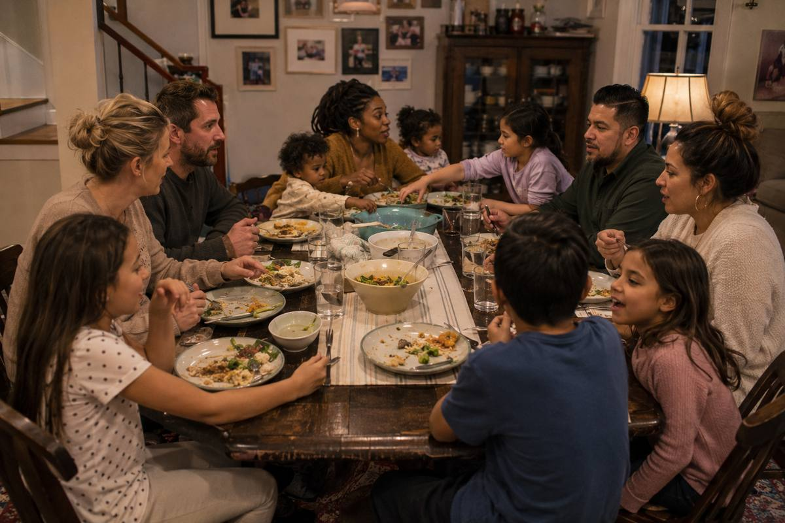
What to prepare
Pick your item
🧄
Needs-prep
A raw ingredient your child chose. It will be prepped at the gathering. Bring it whole and uncut, your child will present it during Show & Tell before anything is prepared.
🍲
Ready-to-eat
A dish cooked at home because it takes too long to prepare on the spot. Always bring the key raw ingredient alongside so your child has something whole to present at Show & Tell. Hot dishes and soups: place directly on the dining table, do not hand these to young children.
If you're bringing onions or anything that makes eyes water: Bring swim goggles for your children. It turns a frustrating moment into a memorable one, and the kids love it.
Tell the host in advance
What you're bringing and whether it's needs-prep or ready-to-eat (use the participant planner to share this with the host)
Any dietary restrictions or allergies for your family
Your child's skill phase, the host uses this to set up the right prep tables. Use the skill-based level finder on the Resources page if you're not sure.
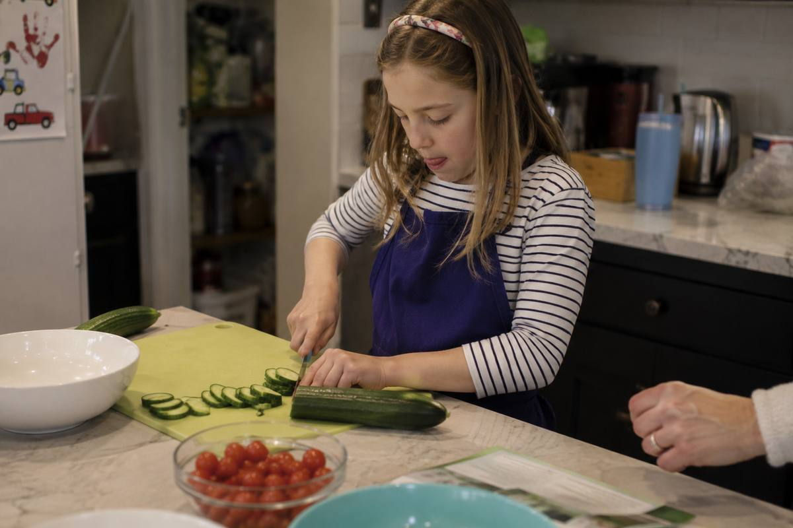
What to expect
📣
Show & Tell
All children gather in a circle. Each child presents their item, raw and whole. It gets passed around to touch and smell. Encourage your child to think about what they want to say on the way over.
🔪
Prepare together
Children work at phase-based prep tables, not family-based stations. Your child will be with others at the same skill level. See the kitchen tasks table on Resources for what each phase does.
🍽️
Eat together
Everyone eats at the same table, children and adults. No pressure to taste anything. Adults try things first and describe what they notice.
💭
Reflect
One question goes around the table at the end: "What was something you noticed today?" Toddlers point. Older children give a sentence. No wrong answers.
How to support your child
Do this
Let your child work at their own pace
Try new foods yourself first and describe what you notice
Step back once your child is at the prep table
Keep table conversation warm and curious
Celebrate effort, not outcome
Avoid this
Coaxing or saying "just one bite"
Taking over a task your child is doing
Correcting results that are safe but imperfect
Forcing participation if your child refuses
Instructional conversation at the table
If your child refuses to participate: That's normal, especially in the first session. Don't force it. They're still absorbing everything around them. Over 3 to 4 sessions, most children begin to engage on their own terms.
What actually works for adolescents
Younger children naturally follow where their parents go. Adolescents have the choice not to and need more encouragement to participate. The approaches below make gatherings feel worth their time rather than a family obligation.
🏅
Tie it to their extracurriculars
Organize the gathering group around an activity your teen is already in: a sports team, music group, or school club. When other kids there are people they enjoy spending time with, the motivation to show up becomes intrinsic.
🎙
Give them real authority, not helper roles
Teens disengage when they feel managed. Give them a lead role. Let them facilitate Show & Tell, plan the next menu, or teach a skill to a younger child. When their competence is trusted, engagement follows.
🍕
Connect food to what they already care about
A teen athlete is open to conversations about performance nutrition. Frame the gathering around their existing interests rather than generic "healthy eating."
🤝
Let them bring a friend
A teen who resists family obligations will often engage more when a friend is present. Encourage older children to bring one friend to a session.
💬
Frame it as their contribution, not their participation
"We need your help to plan this" feels different than "you have to come to this." Make their role explicit and give them credit for their contribution.
📸
Give them a documentation role
Older teens can photograph and film the gathering. It gives them a reason to be present and engaged without requiring them to join every activity.
The extracurricular connection in practice: Top performers in extracurricular activities often have good food habits. Encourage teens to discuss food with their peers and bring recommendations home. Parents should be open to trying those suggestions. An open ear and visible action encourage further participation.
FAQ
What if my child refuses to participate?
Refusal to participate is normal, especially in early sessions. The program intentionally removes all pressure for children to taste or touch anything. Research on food aversion in children shows that repeated low-pressure exposure leads to greater acceptance than force or reasoning. Over 3 to 4 sessions, most children begin to engage on their own terms. If a child consistently refuses, consider if they are at the right phase level.
My children are very different ages. Can they participate together?
Yes. Each child is assigned to a prep table based on their skill phase, not age. Mixed-age siblings work at different tables during prep and come back together at Show & Tell and at the meal. See the How It Works page for detailed examples by family situation.
How do I keep my teenager engaged?
Give them a real role, not a helper role. Let them run Show & Tell, plan the next menu, or take the host role in Week 3. See the full breakdown in the What actually works for adolescents section above.
What if my child has food allergies or restrictions?
Tell the host before the first session so they can plan accordingly. The program works within any dietary framework. Children with restrictions bring items that work for them, and the exploration is about curiosity, not eating everything on the table.
Resources
Two tools to use before each gathering: the skill finder tells you which prep table each child belongs at, and the kitchen tasks table tells you what to assign them once they're there.
🔍
Skill-based level finder
Answer 10 questions about your child to find their phase. Run this once per child before the first session.
🔪
Kitchen tasks by phase
A reference table showing example tasks and what to watch for at each of the four phases.
✅
Facilitator checklist
A printable before, during, and after checklist for the host to run through before families arrive.
📅
Participant planner
A one-page template to plan your gathering: date, families, menu items, and which child goes to which prep table. Print one before each cycle begins.
Skill-based level finder
Select every skill your child currently has and the suggested phase will update automatically. Use this to know which prep table your child should be at.
Uses a spoon or fork independently
Identifies colors and shapes on food
Has washed, torn, or peeled food before
Can use scissors safely
Can follow a 2-step instruction without reminders
Comfortable with a butter knife or Y-peeler
Has helped choose ingredients at the store
Can work the stovetop or oven safely with supervision
Can read and follow a simple recipe independently
Has cooked a full dish with minimal adult help
Select the skills your child has to see a suggested level.
Age-appropriate kitchen tasks
Use this when planning which tasks to assign children at each prep table.
Level
Example tasks
What to watch for
Phase 1 Ages 2 to 4
Wash produce under water · Tear vegetables by hand · Stir cold ingredients in a bowl · Arrange items on a plate
Supervise closely. Focus on engagement and sensory experience, not accuracy. Celebrate effort loudly.
Phase 2 Ages 4 to 7
Peel soft vegetables like banana or avocado · Spread with a butter knife · Juice citrus by hand · Mix salads · Measure ingredients with a cup
Let them work slowly. Expect mess. Avoid correcting technique unless safety is involved.
Phase 3 Ages 7 to 12
Peel hard vegetables with a Y-peeler · Slice soft foods with a table knife · Use a can opener · Read and follow simple recipes · Boil water with supervision
Introduce basic kitchen safety: hot surfaces and sharp edges. Let them recover from small mistakes.
Phase 4 Ages 12 to 18
Use a chef's knife with proper grip · Cooking on a stove fire · Follow multi-step recipes independently · Adjust seasoning by taste · Plan a balanced meal
Step back significantly. Your role is to answer questions, not supervise. Let them own the outcome, including the failures.
Facilitator checklist
Print or pull this up before each gathering. Use it to prepare, stay on track, and close out cleanly.
Before the gathering
During the gathering
After the gathering
Checkboxes reset when you reload the page. Alternatively, print the page to use as a physical checklist.
Participant planner
Print this form and fill it in before the gathering, then share it with the host.
Show Tell Share started with a simple observation: most approaches to healthy eating in children treat it as a knowledge problem. They teach children what's healthy. But knowing what's good to eat doesn't make you want to eat it.
The real problem is habit, environment, and culture. Children develop lasting food behaviors through repeated positive exposure, through participation and ownership, and through watching the people around them. Nutrition lessons and reward charts don't do it on their own.
This program is an attempt to build a system that works with how children actually learn, not how we wish they learned.
A dedication
This project is dedicated to my wife Zoe and my daughters Naomi and Kelsea, as our family relocates from Boston to Taiwan to be closer to my parents. Naomi has been cooking with us since she was two. Now five, Naomi and her two year old sister will be navigating a new place, a new language, and an entirely new food landscape together. Show Tell Share wasn't just built for other families. We'll be using it ourselves, to help our own kids build familiarity and comfort with the foods of the place we're moving to.
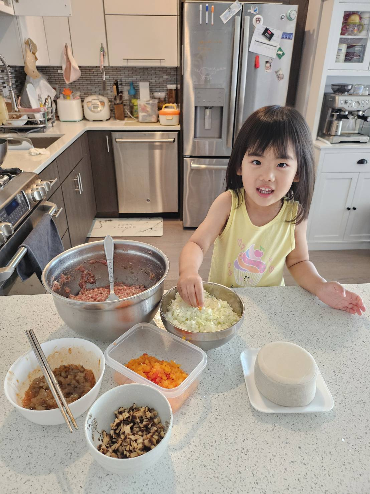
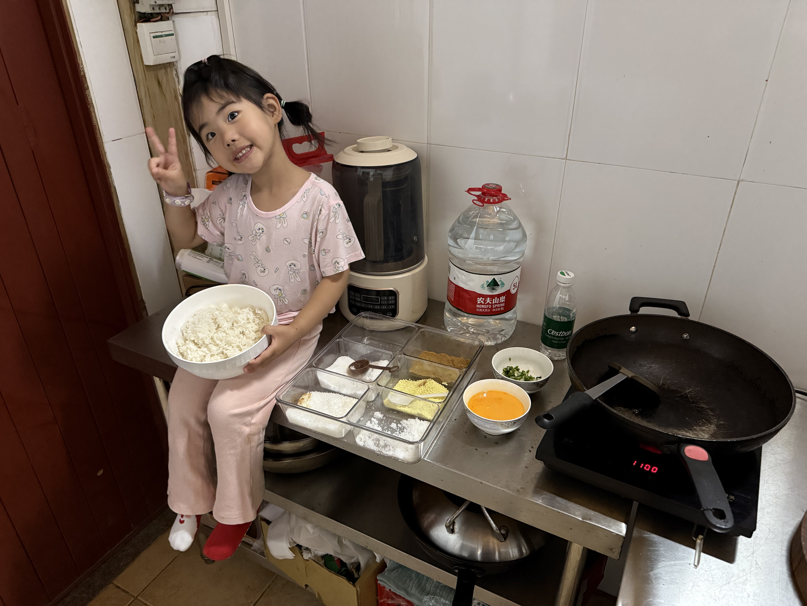
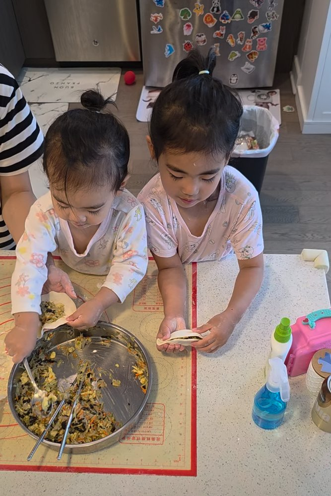
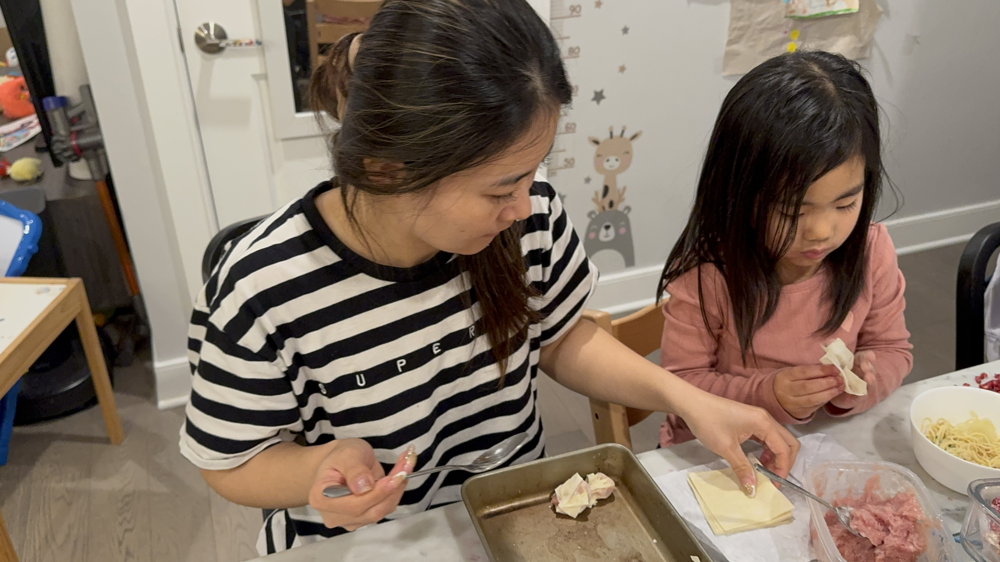
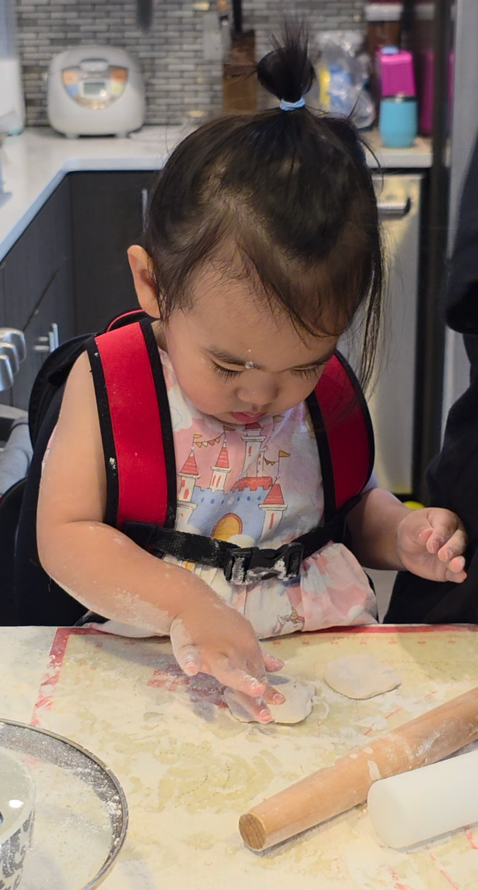
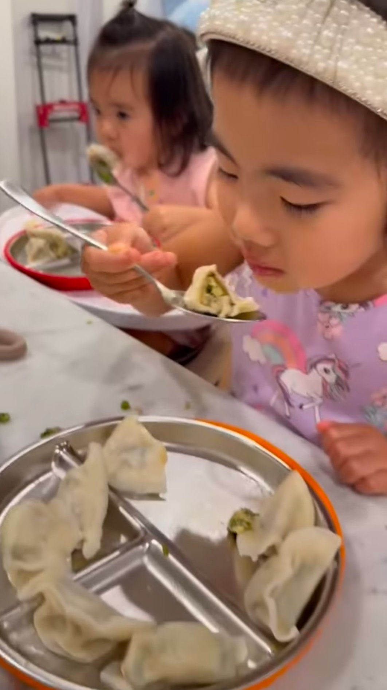
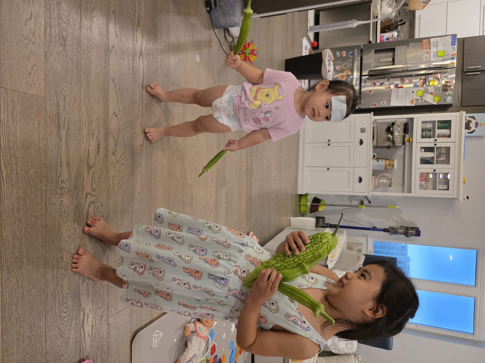
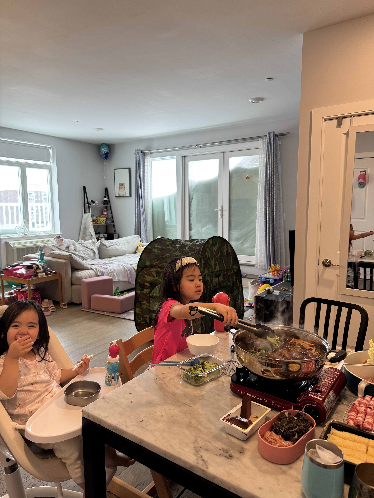
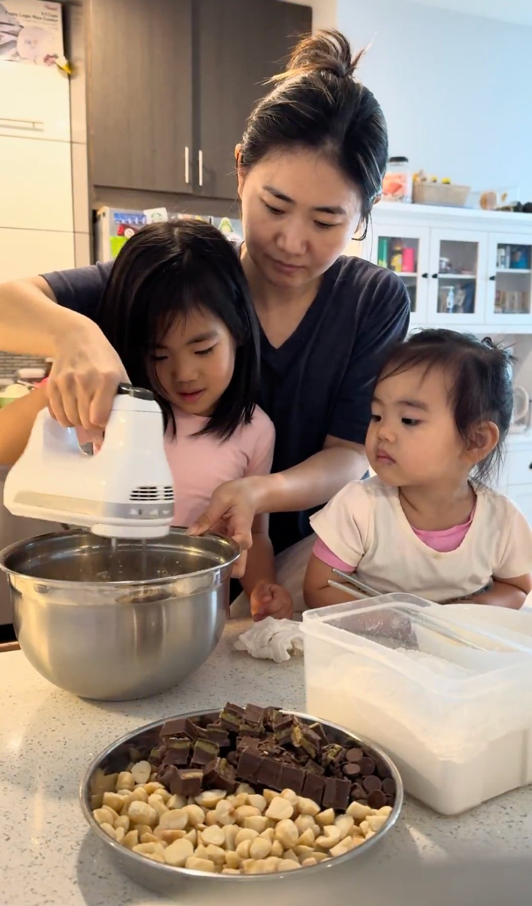
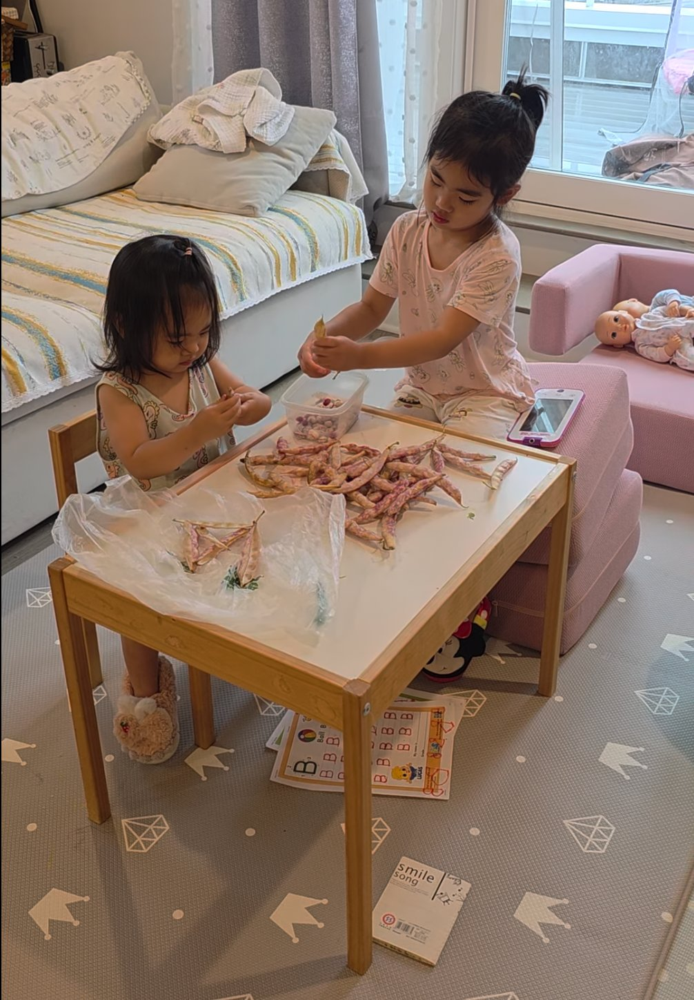
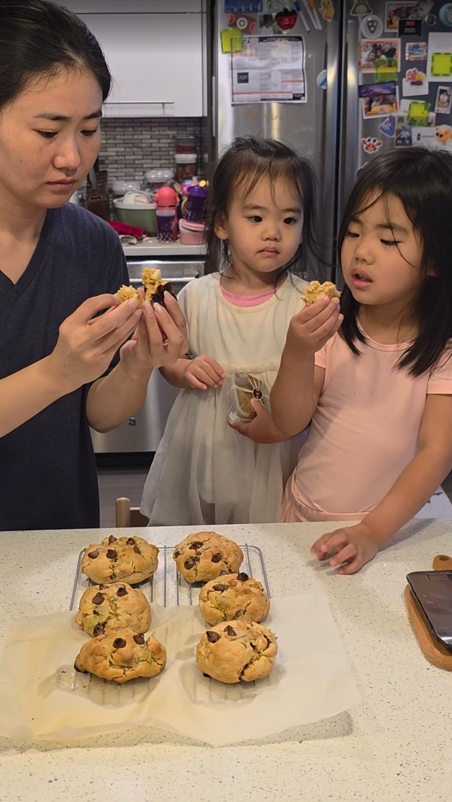
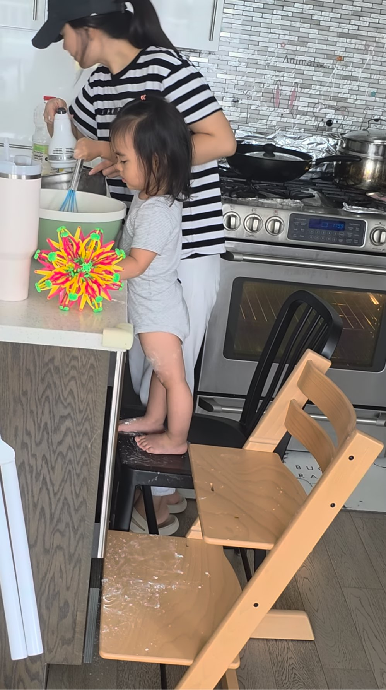
Further reading
The programs and learning theories behind the design, for parents who want to go deeper into the evidence.
Research · Food habit formation
Repeated exposure, not pressure
Children need roughly 10 to 15 low-pressure exposures to a new food before accepting it. Pressure accelerates rejection. This is the core reason every session removes all eating pressure. Birch, L.L. (1980). Child Development.
Research · Social learning · Bandura
Children learn by watching
Seeing peers and parents eat different foods is more powerful than any direct instruction. Children eating alongside other children is more influential than adults telling them what to eat. Bandura, A. (1977). Social Learning Theory.
Pedagogy · Experiential learning · Kolb
Learning happens through doing
Learning through doing and reflecting builds understanding that lectures cannot. Each session closes with a reflection question for exactly this reason. Kolb, D.A. (1984). Experiential Learning.
Pedagogy · Scaffolding · Vygotsky
Support fades as confidence grows
Children accomplish more with support than alone. The program deliberately reduces parent involvement as children gain confidence, shifting from Phase 1's high support toward Phase 4's minimal guidance. Vygotsky, L.S. (1978). Mind in Society.
Pedagogy · Habit design
Routine over motivation
Habits form through repetition of context, not willpower. The same structure, the same people, the same rhythm each time, that's what makes the program stick rather than fade after the first session.
Pedagogy · Enculturation
Food culture is built, not taught
Healthy eating habits come from sustained participation in a food culture, the values, practices, and rituals a family repeats together over time. The recurring gathering is that mechanism.
Program model · Family meals
The Family Dinner Project
Harvard-affiliated research documenting the impact of regular shared family meals on nutrition, connection, and mental health. Visit site
Program model · Hands-on cooking
Cooking with Kids
Evidence-based programs showing that children who help prepare food are significantly more willing to eat it. Visit site